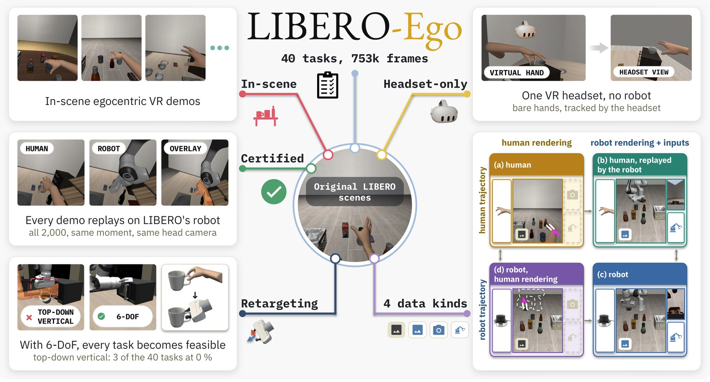
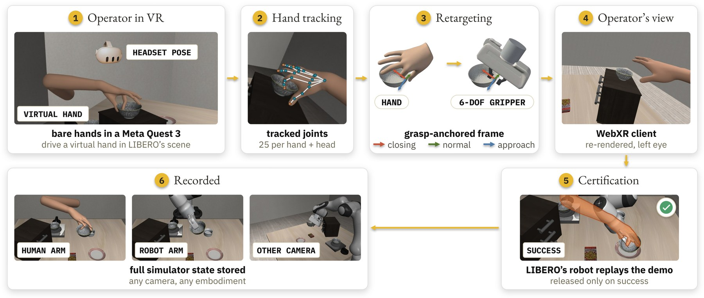
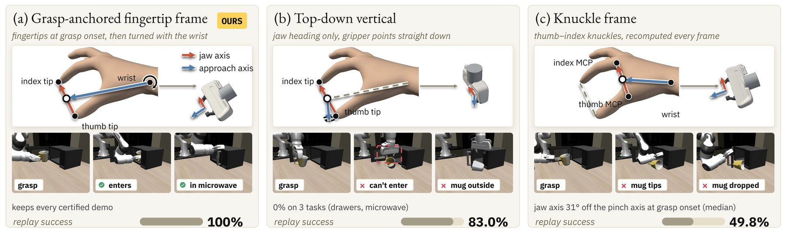
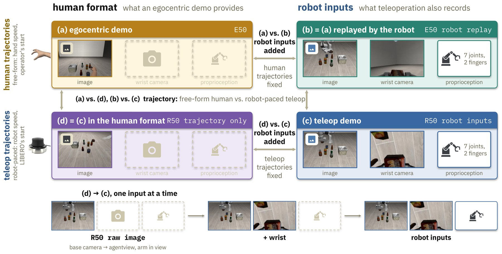

A Benchmark for Robot Learning from
In-Scene Egocentric Human Demonstrations
LIBERO-Ego is a benchmark for learning robot manipulation from egocentric human demonstrations.
Egocentric human demonstrations are cheap to record at scale, but they differ from the teleoperated data robots usually learn from: the trajectories are freer, the camera moves with the head, the image shows a human arm, and there are neither joint readings nor a wrist camera. Works that train robots on egocentric demonstrations of the target tasks each use their own tasks, data and protocol, so their results cannot be compared.
LIBERO-Ego records 2,000 egocentric demonstrations in virtual reality inside the original scenes of 40 LIBERO tasks: a person in a headset performs each task with bare, tracked hands, while the simulator provides appearance and physics. Every demonstration is certified by replay on LIBERO's robot and stored with its full simulator state, so the same trajectory can be rendered as a person's recording or as a robot's, and LIBERO's own teleoperated demonstrations of the same tasks are the reference. Policies are evaluated in closed loop on LIBERO's unmodified robot, tasks and success predicates.

One demonstration of every task, re-rendered from its stored simulator state and the operator's recorded head pose. Switch to the robot to see LIBERO's robot replay the same demonstration.
A demonstration is released only if LIBERO's robot completes the task when it replays the demonstration from its recorded initial state through one fixed 6-DoF hand-to-gripper mapping. The replay is deterministic, and all 2,000 pass.
The operator's tracked head and bare hands drive a virtual hand in LIBERO's scene. A fixed 6-DoF mapping turns the hand into gripper targets, LIBERO's robot replays them, and the demonstration is kept with its full simulator state, from which it can be rendered as human or as robot data.



One HDF5 file per demonstration, 2.2 GB in all, under CC BY 4.0. The full format is in the dataset card.
pip install huggingface_hub
hf download libero-ego/LIBERO-Ego --repo-type dataset --local-dir data/LIBERO-Ego
# or, from the code repository, one suite or task at a time
python scripts/download_data.py --suites libero_objectOne policy is trained for all 40 tasks and evaluated in closed loop on LIBERO's unmodified robot, from LIBERO's 50 official initial states per task, over three evaluation seeds. The policy never sees simulator state.
| Method | Spatial | Object | Goal | Long | Avg |
|---|---|---|---|---|---|
| HumanEgo | 69.9 | 45.5 | 30.3 | 9.2 | 38.7 |
| Diffusion Policy | 22.5 | 17.8 | 25.9 | 8.1 | 18.6 |
| Phantom | 25.1 | 11.1 | 16.9 | 2.9 | 14.0 |
| EgoZero | 53.6 | 66.6 | 49.2 | 21.0 | 47.6 |
| π0.5 | 2.4 | 13.2 | 21.0 | 0.2 | 9.2 |
| Ours | 96.6 | 86.5 | 70.3 | 43.7 | 74.3 |
Success (%) of one model for all 40 tasks trained on the 2,000 egocentric demonstrations only, with no robot teleoperation; mean over three evaluation seeds.
git clone --recursive https://github.com/LIBERO-EGO/LIBERO-Ego.git && cd LIBERO-Ego
./setup_env.sh && conda activate libero_ego
python scripts/evaluate.py --policy my_policy.py:MyPolicy --suites all --seeds 0,1,2 --out results/mine.jsonlIf you use LIBERO-Ego in your research, please cite:
@misc{liberoego2026,
title = {{LIBERO-Ego}: A Benchmark for Robot Learning from In-Scene Egocentric Human Demonstrations},
author = {Anonymous},
year = {2026}
}